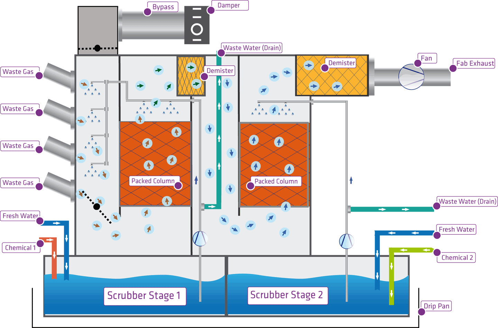
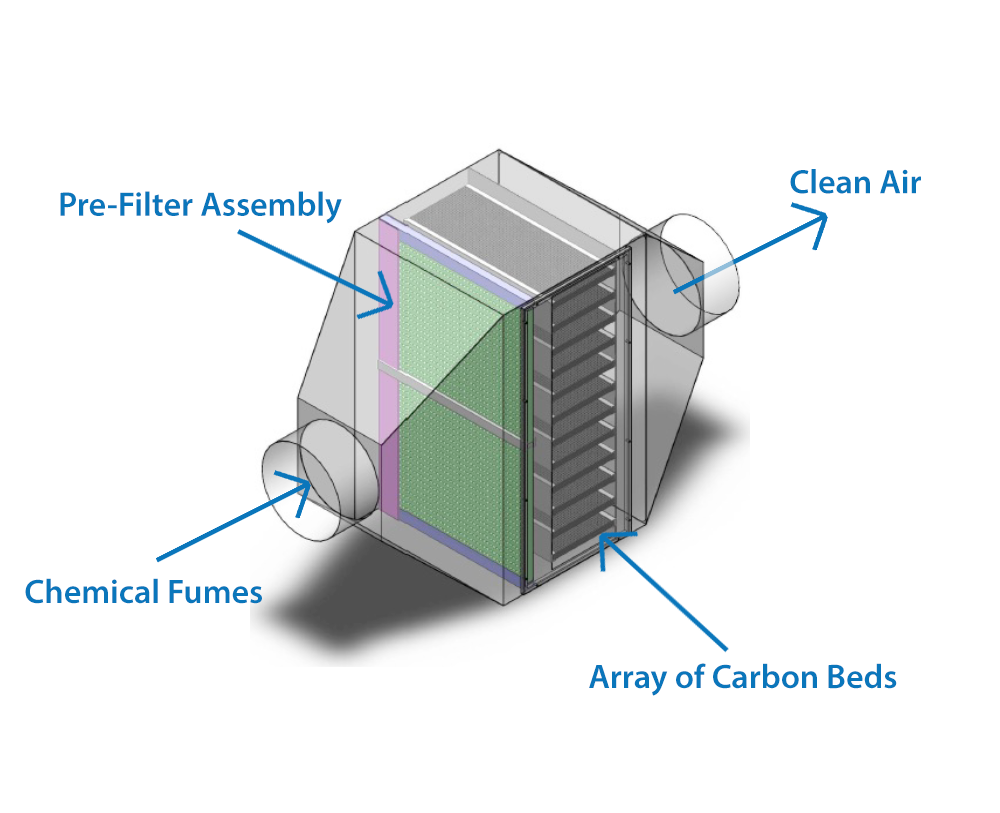

A dry or semi-dry scrubbing system, unlike the wet scrubber, does
not saturate the flue gas stream that is being treated with
moisture. In some cases no moisture is added, while in others only
the amount of moisture that can be evaporated in the flue gas
without condensing is added. Therefore, dry scrubbers generally do
not have a stack steam plume or wastewater handling/disposal
requirements. Dry scrubbing systems are used to remove acid gases
(such as SO2 and HCl) primarily from combustion sources. There are a
number of dry type scrubbing system designs. However, all consist of
two main sections or devices: a device to introduce the acid gas
sorbent material into the gas stream and a particulate matter
control device to remove reaction products, excess sorbent material
as well as any particulate matter already in the flue gas. Dry
scrubbing systems can be categorized as dry sorbent injectors (DSIs)
or as spray dryer absorbers (SDAs). Spray dryer absorbers are also
called semi-dry scrubbers or spray dryers. Dry scrubbing systems are
often used for the removal of odorous and corrosive gases from
wastewater treatment plant operations. The medium used is typically
an activated alumina compound impregnated with materials to handle
specific gases such as hydrogen sulfide.
Media used can be mixed together to offer a wide range of removal
for other odorous compounds such as methyl mercaptans, aldehydes,
volatile organic compounds, dimethyl sulfide, and dimethyl
disulfide. Dry sorbent injection involves the addition of an
alkaline material (usually hydrated lime, soda ash, or sodium
bicarbonate) into the gas stream to react with the acid gases. The
sorbent can be injected directly into several different locations:
the combustion process, the flue gas duct (ahead of the particulate
control device), or an open reaction chamber (if one exists). The
acid gases react with the alkaline sorbents to form solid salts
which are removed in the particulate control device. These simple
systems can achieve only limited acid gas (SO2 and HCl) removal
efficiencies. Higher collection efficiencies can be achieved by
increasing the flue gas humidity (i.e., cooling using water spray).
These devices have been used on medical waste incinerators and a few
municipal waste combustors. In spray dryer absorbers, the flue gases
are introduced into an absorbing tower (dryer) where the gases are
contacted with a finely atomized alkaline slurry. Acid gases are
absorbed by the slurry mixture and react to form solid salts which
are removed by the particulate control device. The heat of the flue
gas is used to evaporate all the water droplets, leaving a
non-saturated flue gas to exit the absorber tower. Spray dryers are
capable of achieving high (80+%) acid gas removal efficiencies.
These devices have been used on industrial and utility boilers and
municipal waste incinerators.
